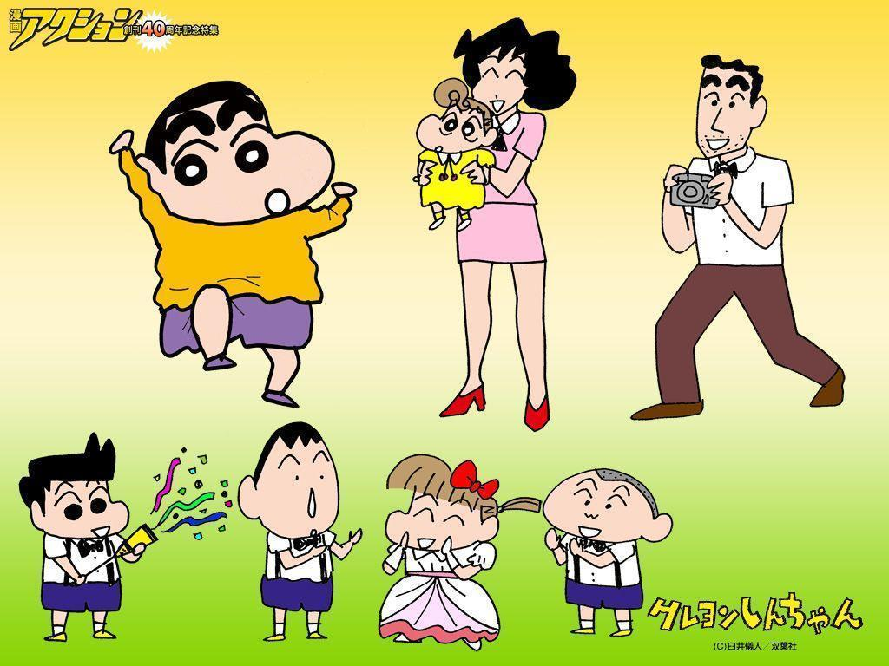

SINCHAN:

(Japanese:,Hepburn: Kureyon Shin-chan),
is a Japanese manga series written and illustrated by Yoshito Usui.
Crayon Shin-chan made its first appearance in 1990
in a Japanese weekly magazine called Weekly Manga Action,
which was published by Futabasha.
MORAL: Enjoy life to the fullest:
Everyone has problems in life which bring us down,
but Shin Chan never takes anything too seriously or allow it to fester in his mind,
rather he focuses on enjoying every moment of his life to the fullest.
